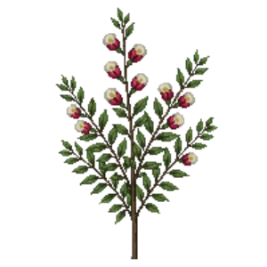

Bearberry Cotoneaster
Cotoneaster dammeri

Bearberry Cotoneaster is a perennial for groundcover, suited to full sun to partial shade and clay, loam, sandy soil or chalk, flowering May, Jun.
| Type | Perennial |
|---|---|
| Mature height | 30 cm |
| Spread | 150 cm |
| Aspect | full sun to partial shade |
| Foliage | Evergreen |
| Hardiness | USDA 6a-8b, RHS H5 |
| Pollinator-friendly | Yes |
| Pet-safe | No |
Where to use it in a border
At around 30 cm, it sits best along the front edge, where a low, spreading habit reads best. Give it about 150 cm of room to spread. It is hardy across USDA zones 6a to 8b and rated H5 by the RHS, so check it suits your area before planting.
It appears in our lists of full sun, clay soil, sandy soil, chalk soil, evergreen plants, pollinator-friendly plants.
Flowering through the year
Worth knowing
- Evergreen, so it keeps the border furnished through winter.
- Not recorded as pet-safe; site it away from pets that graze if that matters to you.
- Its flowers are valued by bees and other pollinators.
Good companions
Plants that share its conditions and style, chosen to complement its place in the border:
- Apple 'Bramley's Seedling'for height behind it
- Apple 'Cox's Orange Pippin'for height behind it
- Bugleto edge in front
- Chinese plumbagofor height behind it
- Climbing rose 'Iceberg'for height behind it
- Crab Apple 'Red Sentinel'for height behind it
Garden styles
See Bearberry Cotoneaster set in a full border, with spacing and companions worked out for your own conditions, in Border Builder.
Sources
Bloom timing and hardiness drawn from:
- MoBot Plant Finder (missouribotanicalgarden.org, 2026-05)
- NC State Extension (plants.ces.ncsu.edu, 2026-05)
- RHS (rhs.org.uk, 2026-05)